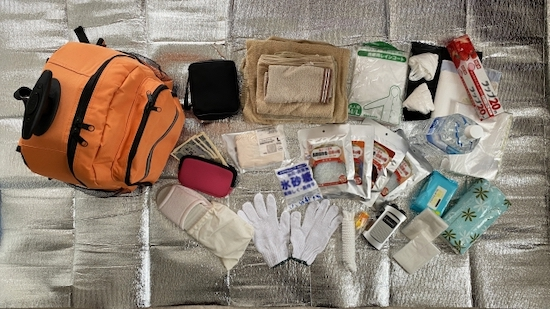

【2023年度版】最新のおすすめ防災グッズ！！

公開日 2023/09/20
最近、色々物騒ですよね。。。
南海トラフ地震が来るのではないかと言われていたり、異常気象による豪雨に豪雨や土砂災害など何かと身近に危険が迫っていますよね！？
そんなときのために備えておく必要がありますよね！？家族や大切な人、自分を守るためにとても必要なことだと思います。
今回は、厳選された防災グッズをご紹介いたします。これらのアイテムは、災害時にあなたの生命と財産を守り、安心感を提供してくれることでしょう。
ぜひご覧いただき、あなたの防災準備を一歩進めるお手伝いができればと思います。
災害用具ってどれくらいもてばいいの？~一人暮らし編~
緊急時に逃げる時に大きな荷物を持ち運びながら避難することは難しいですし、下手すると逃げ遅れてしまいますよね？
なので今回は適切な災害道具の量について説明していきます！
一般的には三日分の備蓄品があれば良いとされています。
また一人暮らしの方が最低限持っておくべき持ち物は飲料水(500mlの水を三本)、食料品(サトウのご飯、レトルトカレーなど保存ができるもの)、簡易トイレなどの衛生用品、薬や救急箱、懐中電灯や災害用のラジオなどがあればある最低限の生活ができると思われます！
これはあくまで最低でも持っておきたいものなので個人で必要なものがあったら各自で準備して備えていきましょう！
No.1 防災セット 地震対策30点避難セット 22000円(税込)

こちらの商品は大変優秀な商品になっております！まずは持ち運びやすいようにリュック式になっているため30点の道具が収納可能となっております。
先ほど述べた最低限必要なものに加えて水のいらないシャンプーなどの生活必需品や生理用品がたくさん入っています！
また身動きが取れない時に助けを呼ぶために必要な緊急用のホイッスルなども入っていますので万が一、逃げ遅れてしまった場合でも安心して助けを呼ぶことができます。
そして何よりこの商品は色々な企業や雑誌などで採用されています！また多くのテレビ番組でも紹介されていることから品質的にはお値段以上のものですのでぜひ購入して災害に備えてください！
楽天市場で見る >No.2 防災セット SHELTER プレミアム 3人用 28600円(税込)

次に紹介する商品は三人用の防災セットです！家族がいらっしゃる方には大変おすすめの商品になっております。バックが２個ついておりその中に災害グッズが入っているのですがそのバッグが赤色、水色、黒色、オレンジ色の四種類から選ぶことができます！
またこのリュックの中に入ってある災害グッズは全てポーチの中に入れられており、種類が多くてもバックの中でぐちゃぐちゃにならず、落ち着いてグッズを取り出すことができます！
さらにバック自体は軽量化なため持ち運びが楽になります！また防水機能もついているため、リュックに水が入ってしまって中の衣類が濡れて重くなってしまうことがないので安心です！
また非常用トイレや全身ドライシャンプーなどの日常品が勢揃いなので万が一に備えることが可能です。
ぜひ購入してもしもの時に備えましょう！
楽天市場で見る >No.3 防災リュック アイリスオーヤマ 14800円(税込)

次はアイリスオーヤマの防災セットリュックです！リュックのデザインがシンプルでも位t運びやすいのが特徴です！またリュックの口がとても広いのでリュックから物を取り出すときに困らずに取り出すことができます。それに加えてリュックの側面はテントなどにも使われている素材なため水も強いのも特徴です。
このリュックの最大のポイントは災害者の実体験を元に防災グッズを揃えていることと、防災士直伝武祭マニュアルがセットでついていることです！これらのおかげで災害時に冷静に臨機応変に対応できることができます！
またこちらのリュックの中には極厚エアベッドが二つ、専用ポンプと枕もついています。
充電器は手回し充電機を採用するのではなく乾電池式のものを採用しており、避難時の無駄な体力消耗を防ぐことをしっかり考えられています！
他にはアイリスオーヤマ製のマスクやポンチョ、軍手、カッターなど意外にないと生活に困るものがたくさん入っているのでとてもおすすめです！
楽天市場で見る >No,4 防災セット 2人用 45点 ベーシック 9900円(税込)

こちらの商品もまた防災士監修の商品となっています！バックが4種類から選べるのもポイントですね！
グッズの中に2in1ランタンというのがあります。これは単三電池3本でランタンの働きと懐中電灯の役割を果たすことができるとても便利なものとなっています！さらにLEDなため長持ちするのと明るさも十分あるのでおすすめです。
さらに防水機能とSOSライトがついており、乾電池で使うことができるヘッドライトもついています！軽量なので頭に負担を残さずに使うことができるで暗闇でも安心して動けるようになるのでおすすめです。
マラもちらの商品には非常用の給水バック3L用がついています！災害時に水が足りなくなってしまった場合などに使えるので便利です。また水量がわかるので家族などで分け合う時に均等に分け合えたり、非常食を作る時などに非常に便利で役に立つと思われます！
何としても値段の安さが魅力的だと言えます！多くの商品が一万円を超えるなかこちらの商品は一万円以下の価格でこのクオリティーを提供しているのがすごいですよね！ぜひお手元に！
楽天市場で見る >No,5 防災セット 家族 3人用 RN 26300円(税込)

こちらの商品は主に地震の防災グッズなのですが、近年地震がとても危惧されているので専門的な商品も最後に紹介させていたただきます！
他の防災グッズとの違いは"命"に強くこだわっています！そのため女性でも安心して背負って走って逃げられるようにできているためバックがとても軽量化されているが特徴です！
大地震による犠牲者の原因を調査し、その統計をもとにどうやったら女性や小さいお子様などを救うことができるのかというのを第一に考えて作られた防災グッズとなっております！
リュックの中にはヘルメットがついています！またそのヘルメットには専用のライトがついているため手を離さなくて近くを明るくすることができます！自分だけではなく他の困っている人たちを救えるっかもしれません！
地震で怖いのは火災もありますよね！？それを防ぐグッズも収納されています。それは望遠フードです！これを使うことによって一酸化中毒による被害を防ぐのと共に視界の確保もすることができます！
さらに避難時にもっとも必要なご飯もバリエーションが豊富に揃えられています！水でできるおにぎり、ライスクッキーなど美味しい非常食が食べることができるのでおすすめです！
楽天市場で見る >まとめ
今回は非常時に役立つ防災グッズを5選紹介しましたがどうでしたか？近年大災害の危機が危惧されているなかで何も準備をしないで生活するのは少し無防備な気がしますよね...。
しかし、今回紹介した商品が一つでも自分の家や、家族、親戚の家にあるだけで気持ち的には少し安心できると思います。
いつどこで何があるかわからないからこそ今日の今この時でも買い揃えておくのがいいのではないかと思います！
ここまでご清聴していた但木誠にありがとうございました！関連記事が下にもありますのでそちらの方もぜひご覧になってください！
では、また次の記事でお会いしましょう！！